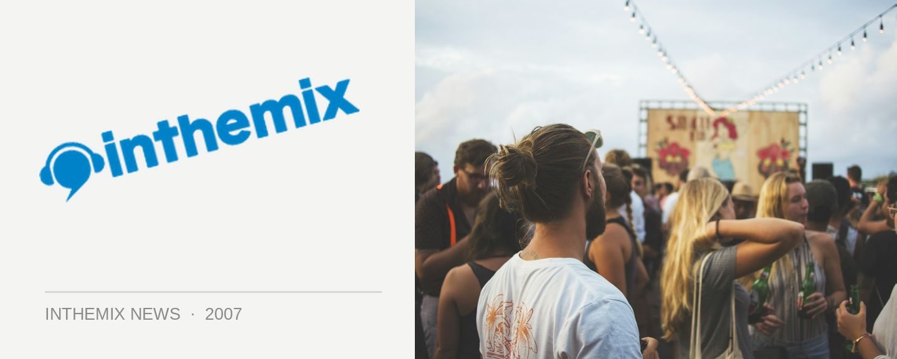

Massive Laundry lineups for June
While though the weather is getting colder, the Chinese Laundry is keeping a solid range of internationals streaming through the club for both its Friday and Saturday night weekly events.
On the breakbeat side of things for the Laundry’s weekly Break Inn night, we can look forward to sets from the likes of Rogue Element, Teebee and Calyx. For those of you with more of an interest in tech, progressive and electro the club will be hosting performance from Derrick May, Pole Folder, Ashton Shuffle and more.
Check below for full lineup details and stay tuned to ITM next week for an official announcement on the massive lineup for the Chinese Laundry’s 10th Birthday on Saturday June 2nd.
Break Inn – Friday nights
1st – Mr Thing (UK) + Vlad Sokolov (UK)
8th – Rogue Element (UK)
15th – Gully (WA)
22nd – Madox (Italy) + Jono Fernandez (Melb)
29th – Teebee (Norway) & Calyx (UK)
Laundry – Friday nights
9th – Derrick May (USA) + Surprise International (France)
16th – Phil K + Villenauve (Ibiza)
23rd – Bjorn Wilke (Ger)
30th – Pole Folder (Bel) + Ashton Shuffle